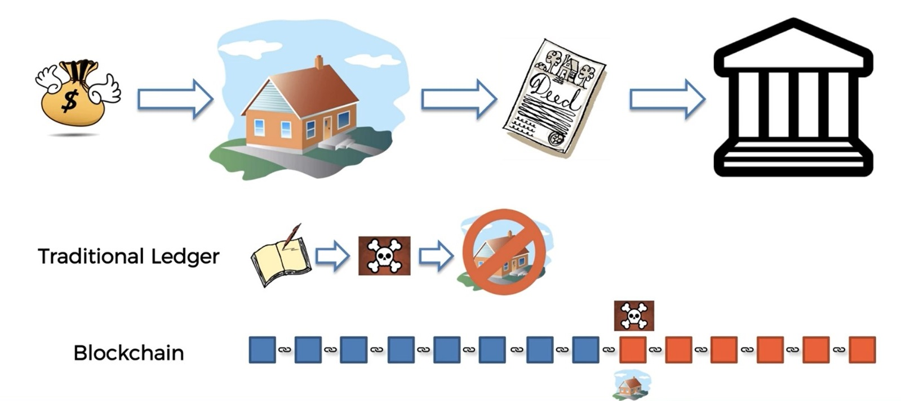
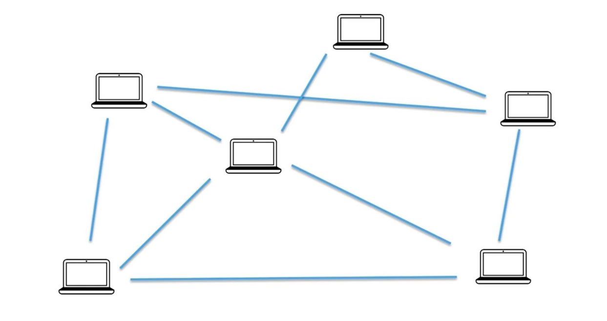
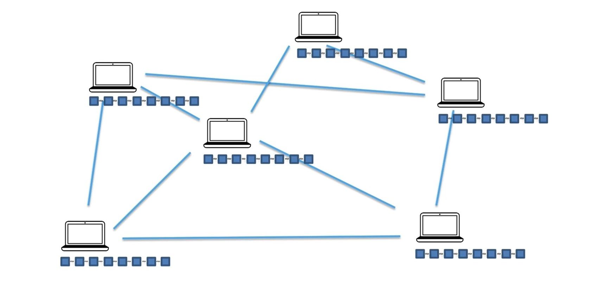
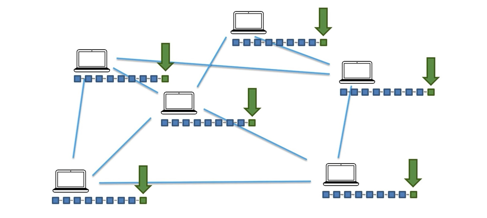
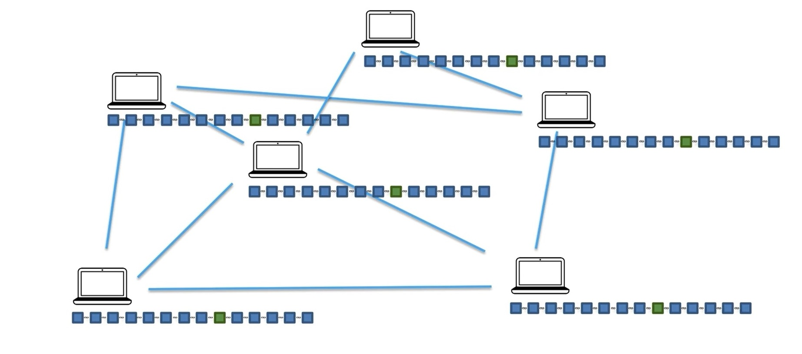
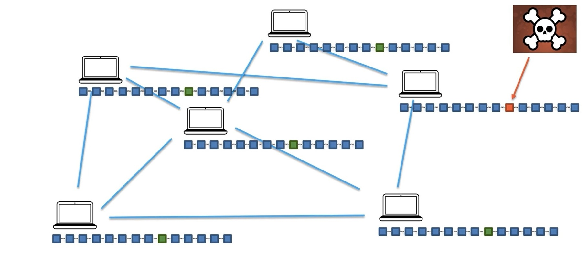
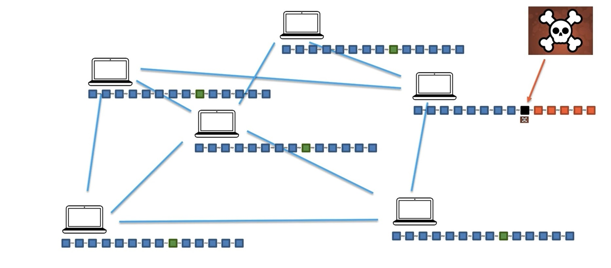
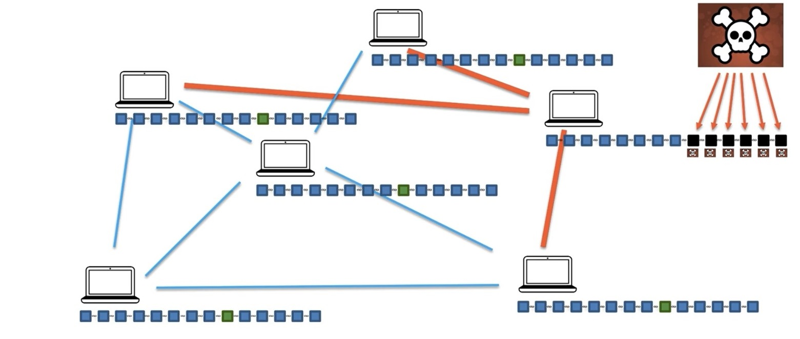
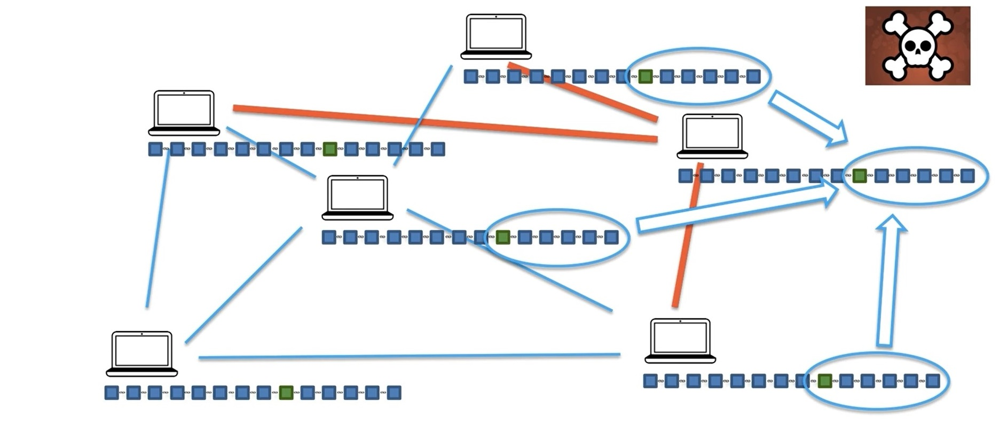
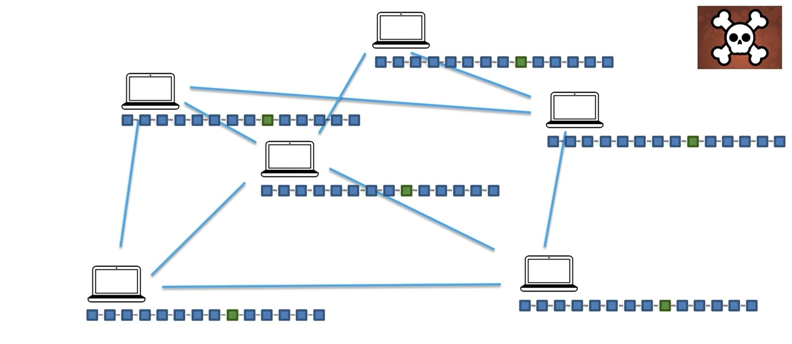

Address
TechnoTriumph IT Innovative Solution LLP,
Kodikeri, Kulai Surthakal
Karnataka,India
Contacts
Email: contact@technotriumph.in/ triumph123group@gmail.com
Phone: +91 7019582399
Learn the art of learning
Distributed Peer To Peer Networks
Hello welcome back
So previously we've already talked about the cryptography. Check that one off. We've checked off immutable ledger previously as well.
And now we're moving on to distributed P2P networks. So let's have a look.

We left off last time when we discussed the example of property Leger's the traditional approach versus the block chain approach and how the blockchain can add more protection and make the whole ledger immutable. Make it very difficult for somebody to change previous records in the ladger and therefore make it more reliable.
However the question here is OK well if I'm trying to attack this later if I'm trying to make some change. Yes indeed pre assumed Previously it was just about ripping out a page or making like a change in a database or Excel document which was very simplistic compared to the blockchain approach but nevertheless even in the block chain approach if this block chain is maintained just by this government authority then what prevents me from going in and if I have enough time then actually changing this blog and then changing this blogging business and this.
After all if we're talking about a property that might be worth a couple of hundred thousand money it might be worth while for somebody to actually put in the effort to change the block here.
Replace their your name with their name and then the hash will be updated and then they will change one hash and other and another hash .

So in a distributed P2P system we've got lots of computers and they're all interconnected. Ideally the more they're connected the better.
But of course you can't we can't possibly connected to be connected to everybody at the same time in some like further computers away are going to be connected a bit less to each other and so on. But through the network everybody is interconnected. And so in this scenario once we do have the block chain how like how does this affect the plot and how can we use this.

Well the blockchain is actually copied across all of those computer. So let's think about our example the properties instead of just keeping it on one system. In that government computer it's actually copied across thousands and thousands of computers here we only have six computers in our example but it can be actually thousands of computers or even millions of computers just laptops of people or computers personal computers. Like literally it could be on your computer or it could be on my computer.
That exact government ledger of all the transactions. And of course it wouldn't have names in it. Everything would be connected through cryptographic keys.

But nevertheless all of this information about all the transactions on everybody's computer and anybody can on their own computer change this information if they like or you know just not change if they don't want to just keep the chain updating being updated on their computer.
So that's what happens so that's how the Bash is distribute.
I know it sounds pretty crazy that like a laser of property transactions would be distributed across peers like just you and me just normal people. But nevertheless let's have a look.
Let's go .

Go with this example. So once in your block is added.
What happens is that information is communicated throughout the network and that block is added further and further throughout the network until all of the computers have this block. And that might take some time especially in large pro-capitalist boxes. So in this case is the house that we purchased so we can see it's now copied onto all of the networks. And then what happens is let's say some time passes as an obvious example three months or a few years and more transactions are added to the block. And a similar amount and now the problem is.

So somebody tries to hack our entry or there's like an error that has been made to the entry Well let go of the hacking example because both of them will have the same solution. So somebody comes along and tries to maliciously attack our entry and take away our house.
And so we're going to present this with a black square once they've successfully changed the entry. This is what it looks like but at the same time as soon as they do that we know that the cryptographic links between the blocks will cause a problem for them because now all of these blocks after that walk are all of the sudden invalid and they need to go through all of them.

And as we discussed maybe it is worthwhile for them to go through all of them and actually change the hashes in those blocks recalculate the hash of each book one at a time and rerecord them and put the new information. So they might go ahead and do it and they're successful and they've changed this block. So in the previous example before we had distributed peer to peer networks that would have been the end they would have succeeded they would have succeeded and it would have taken away that million dollar or a hundred thousand dollar property.
But in distributing peer to peer networks what happens is they are all sink top very constantly. The network is constantly checking. That's how this system is designed.
The block she calls the checking their peers to see if their blogs match up. And so instantly these peers would see that there's a problem that's there. BLOCK change doesn't match up to this block and they would signal to the blockchain on that computer saying hey look just like a computer .

Now where are we these values will see that these values are different and these values will be copied over. So just very quickly all these values will be copied over and the block chain will be just restored to its original value .

So what happens in this case is as you can as you can see the hacker cannot just attack one computer and just attack one block change and change change the values there. The hacker will have to attack all of the block chains and at the same time. So by attacking this one even even if it takes them like that they would have to do that operation very quickly in a matter of you know few seconds or maximum or a couple of minutes depending on the blocking structure. Once they do that it gets replaced.

But so even if they see if they're taking a while to do it it will all get fixed even before they get to the end. But now to successfully attack they actually have to attack Well not all of the piers they have to take more than 50 percent of the computers at the same time in order to replace them so successfully replace the chain. And so the more you have computers the more Piers you have an abortion the harder it is if you have ten thousand computers you would have to hack into 5000 computers 5000 in one computers at the same time and do it within a couple of minutes and probably a couple of you know less than a minute or depending on the blushing.
Yes. Couple of minutes maximum and that's practically impossible. That's where the additional security comes from.
No one person can do anything. And so that's how we bring trust into a trust Listen wire. And so and then they like if we don't know each other.
Anybody in these in this chain we don't trust each other but because we have the majority this majority consensus situation because of that we can trust each other the technology set up the technology design brings trust into this trust trustfulness framework and allows us to transact each other.
That's the beauty of pure distributed peer to peer networks . Click here for Part 3 .
 Click here to download App for Blockchain Internship
Click here to download App for Blockchain Internship
TechnoTriumph IT Innovative Solution LLP,
Kodikeri, Kulai Surthakal
Karnataka,India
Email: contact@technotriumph.in/ triumph123group@gmail.com
Phone: +91 7019582399